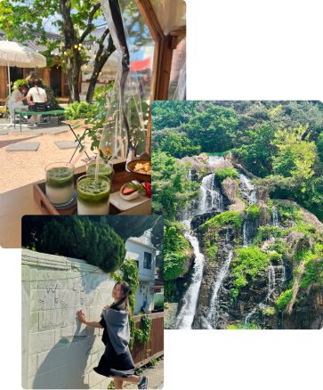

About me
About me
I am someone who believes that perfection isn’t everything—instead, I focus on growth and possibilities. When things don’t go as planned, I remain flexible and find ways to adapt, taking challenges step by step. I embrace mistakes as opportunities to learn rather than reasons to panic. With a creative mindset and an eye for improvement, I constantly look for ways to make a difference, no matter how small the action. I’m curious about how small ideas can have a big impact, and I ask myself how my actions or projects can bring positive change.
In my free time, I enjoy spending quality moments with friends and family, whether it’s chatting over coffee at cozy cafés or enjoying the energy of live music at concerts. I love discovering new experiences, and it’s my dream to one day explore the world and everything it has to offer.
I’m a caring, optimistic, and determined individual who finds joy in learning and evolving. My approach is to focus on what is possible rather than what isn’t, and to stay engaged and independent while always being open to collaboration. By staying flexible, involved, and forward-thinking, I make it my goal to grow both as a person and as a creator.